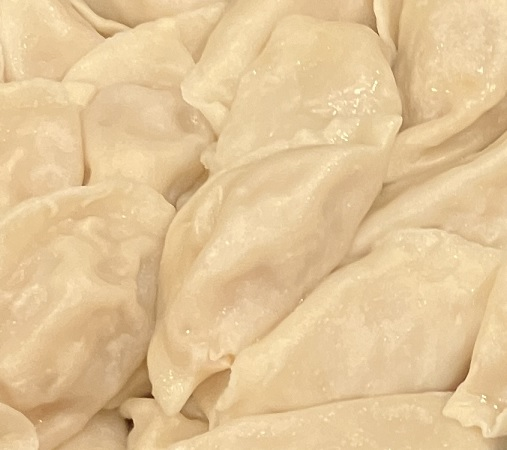

手工饺子皮 ★ Handmade Dumpling Wrappers
 50-70 dumplings
50-70 dumplings 2 hours
2 hours-
 yolocitrus
yolocitrus
自制饺子皮，筋道有嚼劲

- 500g 中筋面粉
- 1.1g 盐
- 240-250g 室温水
准备中筋面粉，盐，室温水。
- -—–
将所有材料混合在盆里，搅拌成絮状
- -—–
将面粉揉成团，面团是中等偏硬的质感，像耳垂一样，盖上保鲜膜静置20分钟
- -—–
将面团揉光，盖上保鲜膜静置1个小时以上
- -—–
在桌面上撒上面粉，面团取出放在桌面上，不要有任何多余的动作!以免起筋后揉不开
- -—–
面团中间取个洞，然后拿起来撑开转圈，捏出一个圈圈
- -—–
找个地方扯开，得到一根长条面团，用手分成四份，取出一份，其他的放回盆里，用手搓成大拇指粗细的长条
- -—–
切7-9g剂子。切一个，转一下，立起来，再切。
- -—–
切完撒面粉，让每个剂子都均匀沾上面粉
- -—–
拿出一个，手掌沿着道口向下压扁，擀皮